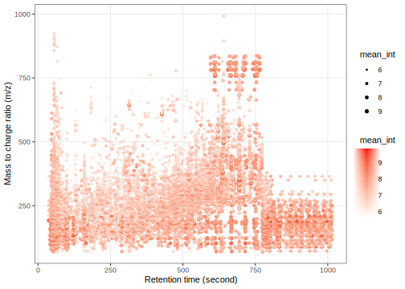
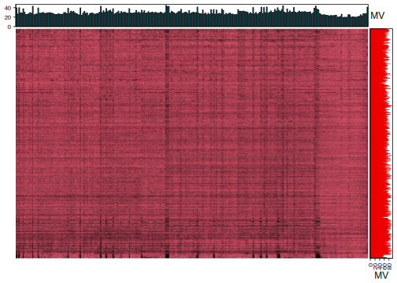
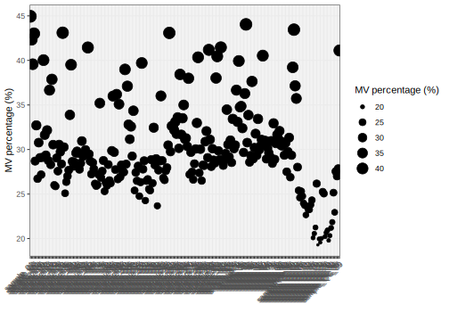
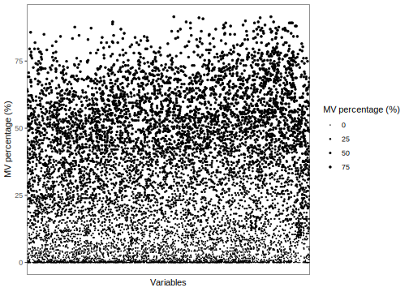
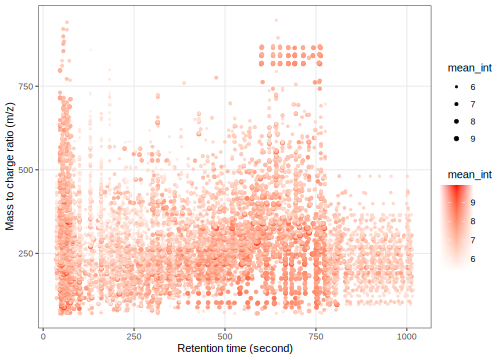
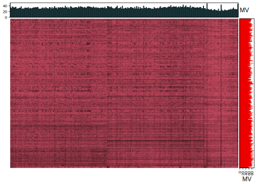
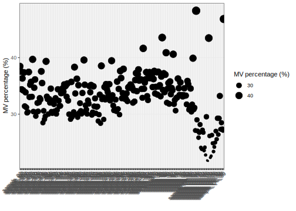
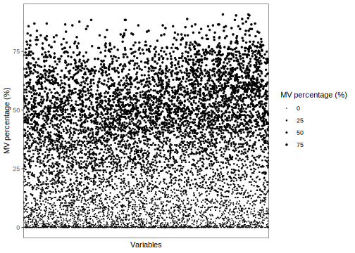

After the raw data processing, peak tables for positive and negative mode have been generated.
Next, we need to get the peak table and sample information and organize them as mass_dataset class objects.
library(tidymass)
library(tidyverse)
#> ── Attaching packages ───────────────────────────── tidyverse 1.3.1 ──
#> ✓ tibble 3.1.6 ✓ purrr 0.3.4
#> ✓ tidyr 1.2.0 ✓ stringr 1.4.0
#> ✓ readr 2.1.2 ✓ forcats 0.5.1.9000
#> ── Conflicts ──────────────────────────────── tidyverse_conflicts() ──
#> x dplyr::collect() masks xcms::collect()
#> x dplyr::combine() masks MSnbase::combine(), Biobase::combine(), BiocGenerics::combine()
#> x tidyr::expand() masks S4Vectors::expand()
#> x tidyr::extract() masks magrittr::extract()
#> x dplyr::filter() masks metpath::filter(), massdataset::filter(), stats::filter()
#> x dplyr::first() masks S4Vectors::first()
#> x dplyr::groups() masks xcms::groups()
#> x dplyr::lag() masks stats::lag()
#> x BiocGenerics::Position() masks ggplot2::Position(), base::Position()
#> x purrr::reduce() masks MSnbase::reduce()
#> x dplyr::rename() masks S4Vectors::rename(), massdataset::rename()
#> x purrr::set_names() masks magrittr::set_names()Load object.
load("mzxml_ms1_data/POS/Result/object")
object_pos <- object
object_pos
#> --------------------
#> massdataset version: 0.99.8
#> --------------------
#> 1.expression_data:[ 10149 x 259 data.frame]
#> 2.sample_info:[ 259 x 4 data.frame]
#> 3.variable_info:[ 10149 x 3 data.frame]
#> 4.sample_info_note:[ 4 x 2 data.frame]
#> 5.variable_info_note:[ 3 x 2 data.frame]
#> 6.ms2_data:[ 0 variables x 0 MS2 spectra]
#> --------------------
#> Processing information (extract_process_info())
#> create_mass_dataset ----------
#> Package Function.used Time
#> 1 massdataset create_mass_dataset() 2022-02-22 16:37:06
#> process_data ----------
#> Package Function.used Time
#> 1 massprocesser process_data 2022-02-22 16:36:42Read sample information.
sample_info_pos <- readr::read_csv("sample_info/sample_info_pos.csv")
#> Rows: 259 Columns: 6
#> ── Column specification ──────────────────────────────────────────────
#> Delimiter: ","
#> chr (4): sample_id, class, subject_id, group
#> dbl (2): injection.order, batch
#>
#> ℹ Use `spec()` to retrieve the full column specification for this data.
#> ℹ Specify the column types or set `show_col_types = FALSE` to quiet this message.
head(sample_info_pos)
#> # A tibble: 6 × 6
#> sample_id injection.order class batch subject_id group
#> <chr> <dbl> <chr> <dbl> <chr> <chr>
#> 1 sample_QC_01 1 QC 1 <NA> QC
#> 2 sample_01 2 Subject 1 subject_474 Control
#> 3 sample_02 3 Subject 1 subject_431 Control
#> 4 sample_06 4 Subject 1 subject_414 Case
#> 5 sample_07 5 Subject 1 subject_830 Control
#> 6 sample_11 6 Subject 1 subject_125 CaseAdd sample_info_pos to object_pos
object_pos %>%
extract_sample_info() %>%
head()
#> sample_id group class injection.order
#> 1 sample_06 Case Subject 1
#> 2 sample_103 Case Subject 2
#> 3 sample_11 Case Subject 3
#> 4 sample_112 Case Subject 4
#> 5 sample_117 Case Subject 5
#> 6 sample_12 Case Subject 6
object_pos <-
object_pos %>%
activate_mass_dataset(what = "sample_info") %>%
dplyr::select(-c("group", "class", "injection.order"))object_pos =
object_pos %>%
activate_mass_dataset(what = "sample_info") %>%
left_join(sample_info_pos,
by = "sample_id")
object_pos %>%
extract_sample_info() %>%
head()
#> sample_id injection.order class batch subject_id group
#> 1 sample_06 4 Subject 1 subject_414 Case
#> 2 sample_103 71 Subject 1 subject_330 Case
#> 3 sample_11 6 Subject 1 subject_125 Case
#> 4 sample_112 78 Subject 1 subject_295 Case
#> 5 sample_117 80 Subject 1 subject_793 Case
#> 6 sample_12 8 Subject 1 subject_387 CaseSave the object_pos in a new folder named as data_cleaning.
dir.create("data_cleaning/POS", showWarnings = FALSE, recursive = TRUE)
save(object_pos, file = "data_cleaning/POS/object_pos")object_pos
#> --------------------
#> massdataset version: 0.99.8
#> --------------------
#> 1.expression_data:[ 10149 x 259 data.frame]
#> 2.sample_info:[ 259 x 6 data.frame]
#> 3.variable_info:[ 10149 x 3 data.frame]
#> 4.sample_info_note:[ 6 x 2 data.frame]
#> 5.variable_info_note:[ 3 x 2 data.frame]
#> 6.ms2_data:[ 0 variables x 0 MS2 spectra]
#> --------------------
#> Processing information (extract_process_info())
#> create_mass_dataset ----------
#> Package Function.used Time
#> 1 massdataset create_mass_dataset() 2022-02-22 16:37:06
#> process_data ----------
#> Package Function.used Time
#> 1 massprocesser process_data 2022-02-22 16:36:42
dim(object_pos)
#> [1] 10149 259
object_pos %>%
activate_mass_dataset(what = "sample_info") %>%
dplyr::count(class)
#> class n
#> 1 QC 39
#> 2 Subject 220
object_pos %>%
activate_mass_dataset(what = "sample_info") %>%
dplyr::count(group)
#> group n
#> 1 Case 110
#> 2 Control 110
#> 3 QC 39
object_pos %>%
activate_mass_dataset(what = "sample_info") %>%
dplyr::count(batch)
#> batch n
#> 1 1 112
#> 2 2 147So for positive mode, we have 259 samples and 10,149 variables. 220 subject samples and 39 QC samples. 110 control samples and 110 case samples. Two batches in total, 112 samples in batch 1 and 147 in batch 2.
Next, we can get the peak distributation plot of positive mode.
object_pos %>%
`+`(1) %>%
log(10) %>%
show_mz_rt_plot() +
scale_size_continuous(range = c(0.01, 2))
We can explore the missing values (mvs) in positive mode data.
get_mv_number(object = object_pos)
#> [1] 785821785,821 mvs in total.
get_mv_number(object = object_pos, by = "sample") %>%
head()
#> sample_06 sample_103 sample_11 sample_112 sample_117 sample_12
#> 4016 2711 4063 2981 2919 3844Missing value number in each sample.
get_mv_number(object = object_pos, by = "variable") %>%
head()
#> M70T73_POS M70T53_POS M70T183_POS M70T527_POS M71T695_POS M71T183_POS
#> 129 16 155 54 133 169Missing value number in each variable.
We can use the figure to show the missing value information.
show_missing_values(object = object_pos, show_column_names = FALSE, percentage = TRUE)
Show the mvs in samples.
show_sample_missing_values(object = object_pos, percentage = TRUE)
Show the mvs in variables
show_variable_missing_values(
object = object_pos,
percentage = TRUE,
show_x_text = FALSE,
show_x_ticks = FALSE
) +
scale_size_continuous(range = c(0.01, 1))
Load object.
load("mzxml_ms1_data/NEG/Result/object")
object_neg <- object
object_neg
#> --------------------
#> massdataset version: 0.99.8
#> --------------------
#> 1.expression_data:[ 8804 x 259 data.frame]
#> 2.sample_info:[ 259 x 4 data.frame]
#> 3.variable_info:[ 8804 x 3 data.frame]
#> 4.sample_info_note:[ 4 x 2 data.frame]
#> 5.variable_info_note:[ 3 x 2 data.frame]
#> 6.ms2_data:[ 0 variables x 0 MS2 spectra]
#> --------------------
#> Processing information (extract_process_info())
#> create_mass_dataset ----------
#> Package Function.used Time
#> 1 massdataset create_mass_dataset() 2022-02-22 16:38:19
#> process_data ----------
#> Package Function.used Time
#> 1 massprocesser process_data 2022-02-22 16:38:02Read sample information.
sample_info_neg <-
readr::read_csv("sample_info/sample_info_neg.csv")
#> Rows: 259 Columns: 6
#> ── Column specification ──────────────────────────────────────────────
#> Delimiter: ","
#> chr (4): sample_id, class, subject_id, group
#> dbl (2): injection.order, batch
#>
#> ℹ Use `spec()` to retrieve the full column specification for this data.
#> ℹ Specify the column types or set `show_col_types = FALSE` to quiet this message.
head(sample_info_neg)
#> # A tibble: 6 × 6
#> sample_id injection.order class batch subject_id group
#> <chr> <dbl> <chr> <dbl> <chr> <chr>
#> 1 sample_QC_01 1 QC 1 <NA> QC
#> 2 sample_01 2 Subject 1 subject_474 Control
#> 3 sample_02 3 Subject 1 subject_431 Control
#> 4 sample_06 4 Subject 1 subject_414 Case
#> 5 sample_07 5 Subject 1 subject_830 Control
#> 6 sample_11 6 Subject 1 subject_125 CaseAdd sample_info_neg to object_neg
object_neg %>%
extract_sample_info() %>%
head()
#> sample_id group class injection.order
#> 1 sample_06 Case Subject 1
#> 2 sample_103 Case Subject 2
#> 3 sample_11 Case Subject 3
#> 4 sample_112 Case Subject 4
#> 5 sample_117 Case Subject 5
#> 6 sample_12 Case Subject 6
object_neg <-
object_neg %>%
activate_mass_dataset(what = "sample_info") %>%
dplyr::select(-c("group", "class", "injection.order"))object_neg <-
object_neg %>%
activate_mass_dataset(what = "sample_info") %>%
left_join(sample_info_neg,
by = "sample_id")
object_neg %>%
extract_sample_info() %>%
head()
#> sample_id injection.order class batch subject_id group
#> 1 sample_06 4 Subject 1 subject_414 Case
#> 2 sample_103 71 Subject 1 subject_330 Case
#> 3 sample_11 6 Subject 1 subject_125 Case
#> 4 sample_112 78 Subject 1 subject_295 Case
#> 5 sample_117 80 Subject 1 subject_793 Case
#> 6 sample_12 8 Subject 1 subject_387 CaseSave the object_neg in a new folder named as data_cleaning.
dir.create("data_cleaning/NEG", showWarnings = FALSE, recursive = TRUE)
save(object_neg, file = "data_cleaning/NEG/object_neg")object_neg
#> --------------------
#> massdataset version: 0.99.8
#> --------------------
#> 1.expression_data:[ 8804 x 259 data.frame]
#> 2.sample_info:[ 259 x 6 data.frame]
#> 3.variable_info:[ 8804 x 3 data.frame]
#> 4.sample_info_note:[ 6 x 2 data.frame]
#> 5.variable_info_note:[ 3 x 2 data.frame]
#> 6.ms2_data:[ 0 variables x 0 MS2 spectra]
#> --------------------
#> Processing information (extract_process_info())
#> create_mass_dataset ----------
#> Package Function.used Time
#> 1 massdataset create_mass_dataset() 2022-02-22 16:38:19
#> process_data ----------
#> Package Function.used Time
#> 1 massprocesser process_data 2022-02-22 16:38:02
dim(object_neg)
#> [1] 8804 259
object_neg %>%
activate_mass_dataset(what = "sample_info") %>%
dplyr::count(class)
#> class n
#> 1 QC 39
#> 2 Subject 220
object_neg %>%
activate_mass_dataset(what = "sample_info") %>%
dplyr::count(group)
#> group n
#> 1 Case 110
#> 2 Control 110
#> 3 QC 39
object_neg %>%
activate_mass_dataset(what = "sample_info") %>%
dplyr::count(batch)
#> batch n
#> 1 1 86
#> 2 2 173So for negative mode, we have 259 samples and 8,804 variables. 220 subject samples and 39 QC samples. 110 control samples and 110 case samples. Two batches in total, 112 samples in batch 1 and 147 in batch 2.
Next, we can get the peak distributation plot of negative mode.
object_neg %>%
`+`(1) %>%
log(10) %>%
show_mz_rt_plot() +
scale_size_continuous(range = c(0.01, 2))
We can explore the missing values in negitive mode data.
get_mv_number(object = object_neg)
#> [1] 748253748,253 mvs in total.
get_mv_number(object = object_neg, by = "sample") %>%
head()
#> sample_06 sample_103 sample_11 sample_112 sample_117 sample_12
#> 3029 2766 3298 3100 2912 3053Missing value number in each sample.
get_mv_number(object = object_neg, by = "variable") %>%
head()
#> M70T712_NEG M70T527_NEG M70T587_NEG M70T47_NEG M71T587_NEG M71T641_NEG
#> 16 137 2 146 41 19Missing value number in each variable.
We can use the figure to show the missing value information.
show_missing_values(object = object_neg, show_column_names = FALSE, percentage = TRUE)
Show the mvs in samples.
show_sample_missing_values(object = object_neg, percentage = TRUE)
Show the mvs in variables.
show_variable_missing_values(object = object_neg,
percentage = TRUE,
show_x_text = FALSE,
show_x_ticks = FALSE) +
scale_size_continuous(range = c(0.01, 1))
So from those exploration, we have a brief summary of our data. Next, we will use masscleaner pacakge to do the data cleaning of data.
sessionInfo()
#> R version 4.1.2 (2021-11-01)
#> Platform: x86_64-apple-darwin17.0 (64-bit)
#> Running under: macOS Big Sur 10.16
#>
#> Matrix products: default
#> BLAS: /Library/Frameworks/R.framework/Versions/4.1/Resources/lib/libRblas.0.dylib
#> LAPACK: /Library/Frameworks/R.framework/Versions/4.1/Resources/lib/libRlapack.dylib
#>
#> locale:
#> [1] en_US.UTF-8/en_US.UTF-8/en_US.UTF-8/C/en_US.UTF-8/en_US.UTF-8
#>
#> attached base packages:
#> [1] stats4 stats graphics grDevices utils datasets methods
#> [8] base
#>
#> other attached packages:
#> [1] forcats_0.5.1.9000 stringr_1.4.0 purrr_0.3.4
#> [4] readr_2.1.2 tidyr_1.2.0 tibble_3.1.6
#> [7] tidyverse_1.3.1 dplyr_1.0.8 metid_1.2.4
#> [10] metpath_0.99.4 massstat_0.99.13 ggfortify_0.4.14
#> [13] massqc_0.99.7 masscleaner_0.99.7 xcms_3.16.1
#> [16] MSnbase_2.20.4 ProtGenerics_1.26.0 S4Vectors_0.32.3
#> [19] mzR_2.28.0 Rcpp_1.0.8 Biobase_2.54.0
#> [22] BiocGenerics_0.40.0 BiocParallel_1.28.3 massprocesser_0.99.3
#> [25] ggplot2_3.3.5 masstools_0.99.5 massdataset_0.99.20
#> [28] tidymass_0.99.6 magrittr_2.0.2
#>
#> loaded via a namespace (and not attached):
#> [1] blogdown_1.7 bit64_4.0.5
#> [3] missForest_1.4 knitr_1.37
#> [5] DelayedArray_0.20.0 data.table_1.14.2
#> [7] rpart_4.1.16 KEGGREST_1.34.0
#> [9] RCurl_1.98-1.5 doParallel_1.0.17
#> [11] generics_0.1.2 snow_0.4-4
#> [13] leaflet_2.1.0 preprocessCore_1.56.0
#> [15] mixOmics_6.18.1 RANN_2.6.1
#> [17] proxy_0.4-26 future_1.23.0
#> [19] bit_4.0.4 tzdb_0.2.0
#> [21] xml2_1.3.3 lubridate_1.8.0
#> [23] ggsci_2.9 SummarizedExperiment_1.24.0
#> [25] assertthat_0.2.1 viridis_0.6.2
#> [27] xfun_0.29 hms_1.1.1
#> [29] jquerylib_0.1.4 evaluate_0.15
#> [31] DEoptimR_1.0-10 fansi_1.0.2
#> [33] dbplyr_2.1.1 readxl_1.3.1
#> [35] igraph_1.2.11 DBI_1.1.2
#> [37] htmlwidgets_1.5.4 MsFeatures_1.3.0
#> [39] rARPACK_0.11-0 ellipsis_0.3.2
#> [41] RSpectra_0.16-0 crosstalk_1.2.0
#> [43] backports_1.4.1 bookdown_0.24
#> [45] ggcorrplot_0.1.3 MatrixGenerics_1.6.0
#> [47] vctrs_0.3.8 remotes_2.4.2
#> [49] here_1.0.1 withr_2.4.3
#> [51] ggforce_0.3.3 itertools_0.1-3
#> [53] robustbase_0.93-9 vroom_1.5.7
#> [55] checkmate_2.0.0 svglite_2.0.0
#> [57] cluster_2.1.2 lazyeval_0.2.2
#> [59] crayon_1.5.0 ellipse_0.4.2
#> [61] labeling_0.4.2 pkgconfig_2.0.3
#> [63] tweenr_1.0.2 GenomeInfoDb_1.30.0
#> [65] nnet_7.3-17 rlang_1.0.1
#> [67] globals_0.14.0 lifecycle_1.0.1
#> [69] affyio_1.64.0 extrafontdb_1.0
#> [71] fastDummies_1.6.3 MassSpecWavelet_1.60.0
#> [73] modelr_0.1.8 cellranger_1.1.0
#> [75] randomForest_4.7-1 rprojroot_2.0.2
#> [77] polyclip_1.10-0 matrixStats_0.61.0
#> [79] Matrix_1.4-0 reprex_2.0.1
#> [81] base64enc_0.1-3 GlobalOptions_0.1.2
#> [83] png_0.1-7 viridisLite_0.4.0
#> [85] rjson_0.2.21 clisymbols_1.2.0
#> [87] bitops_1.0-7 pander_0.6.4
#> [89] Biostrings_2.62.0 shape_1.4.6
#> [91] parallelly_1.30.0 robust_0.7-0
#> [93] jpeg_0.1-9 gridGraphics_0.5-1
#> [95] scales_1.1.1 plyr_1.8.6
#> [97] zlibbioc_1.40.0 compiler_4.1.2
#> [99] RColorBrewer_1.1-2 pcaMethods_1.86.0
#> [101] clue_0.3-60 rrcov_1.6-2
#> [103] cli_3.2.0 affy_1.72.0
#> [105] XVector_0.34.0 listenv_0.8.0
#> [107] patchwork_1.1.1 pbapply_1.5-0
#> [109] htmlTable_2.4.0 Formula_1.2-4
#> [111] MASS_7.3-55 tidyselect_1.1.1
#> [113] vsn_3.62.0 stringi_1.7.6
#> [115] highr_0.9 yaml_2.3.4
#> [117] latticeExtra_0.6-29 MALDIquant_1.21
#> [119] ggrepel_0.9.1 grid_4.1.2
#> [121] sass_0.4.0 tools_4.1.2
#> [123] parallel_4.1.2 circlize_0.4.14
#> [125] rstudioapi_0.13 MsCoreUtils_1.6.0
#> [127] foreach_1.5.2 foreign_0.8-82
#> [129] gridExtra_2.3 farver_2.1.0
#> [131] mzID_1.32.0 ggraph_2.0.5
#> [133] rvcheck_0.2.1 digest_0.6.29
#> [135] BiocManager_1.30.16 GenomicRanges_1.46.1
#> [137] broom_0.7.12 ncdf4_1.19
#> [139] httr_1.4.2 ComplexHeatmap_2.10.0
#> [141] colorspace_2.0-2 rvest_1.0.2
#> [143] XML_3.99-0.8 fs_1.5.2
#> [145] IRanges_2.28.0 splines_4.1.2
#> [147] yulab.utils_0.0.4 graphlayouts_0.8.0
#> [149] ggplotify_0.1.0 systemfonts_1.0.3
#> [151] plotly_4.10.0 fit.models_0.64
#> [153] jsonlite_1.7.3 tidygraph_1.2.0
#> [155] corpcor_1.6.10 R6_2.5.1
#> [157] Hmisc_4.6-0 pillar_1.7.0
#> [159] htmltools_0.5.2 glue_1.6.1
#> [161] fastmap_1.1.0 class_7.3-20
#> [163] codetools_0.2-18 pcaPP_1.9-74
#> [165] mvtnorm_1.1-3 furrr_0.2.3
#> [167] utf8_1.2.2 lattice_0.20-45
#> [169] bslib_0.3.1 magick_2.7.3
#> [171] zip_2.2.0 openxlsx_4.2.5
#> [173] Rttf2pt1_1.3.9 survival_3.2-13
#> [175] limma_3.50.0 rmarkdown_2.11
#> [177] munsell_0.5.0 e1071_1.7-9
#> [179] GetoptLong_1.0.5 GenomeInfoDbData_1.2.7
#> [181] iterators_1.0.14 impute_1.68.0
#> [183] haven_2.4.3 reshape2_1.4.4
#> [185] gtable_0.3.0 extrafont_0.17